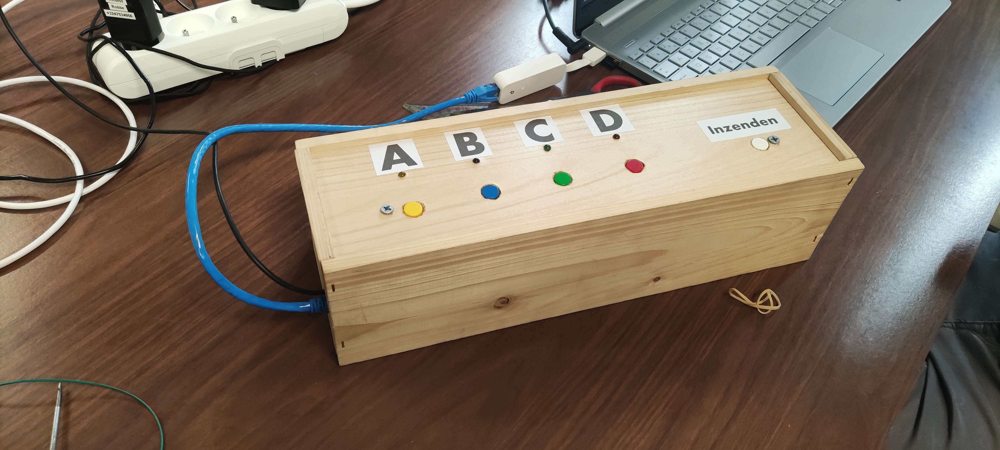

Realisaties

Smart Quiz
Smart Quiz
De smart quiz was een opdracht van het opleidingsonderdeel "Systems Engineering & Analysis". Voor de quiz moesten we vooral de tijdroving van de verbeteringen op papier wegwerken. Het fysieke toestel moest een draagbaar systeem zijn dat overal werkt en makkelijk in opzet is. Wij hebben hieraan gewerkt met een groep van 3 studenten.
Ikzelf heb me vooral bezig gehouden met de front-end, maar ook de communicatie tussen de website voor het personeel en de database, dit is gebeurd in PHP. De receptie, jury en de quizmaster hebben een gemeenschappelijke website gekregen waar functies in zaten om de quiz op een gemakkelijke manier te laten.
Functies:
- Quizmaster
- Quizrondes toevoegen/verwijderen
- Quizvragen toevoegen/verwijderen
- Scoreboard vernieuwen (Om aan de quizzer te laten zien)
- Jury
- Quizrondes verwijderen
- Quizvragen verwijderen
- Scoreboard beheren
- Receptie
- Teams Toevoegen/verwijderen